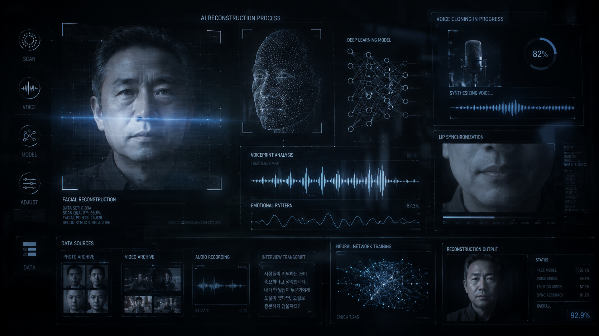
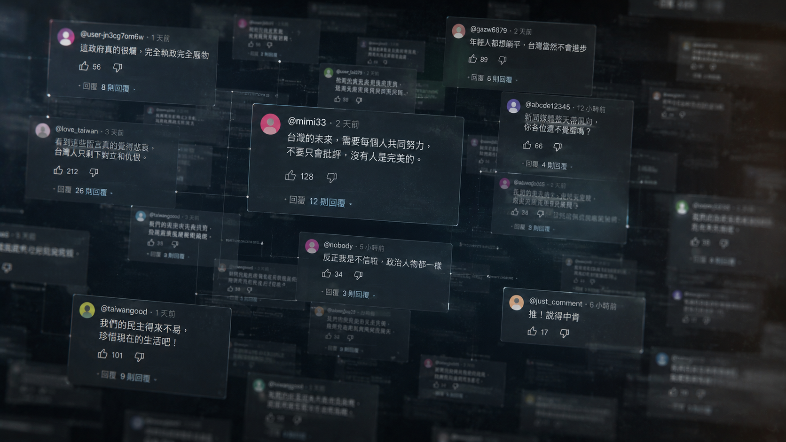

digital immortality
AI技術重現逝者生命臺灣數位永生如何發展
【記者陳少凡、黃暐喬、陳雙、顏貝恩報導】
數位永生走進現實
音樂響起，伴隨俏皮幽默的步伐，曾經的秀場天王豬哥亮竟緩緩從側台走出，再次登上了螢光幕。2026年除夕夜晚上節目「民視第一發發發」，主辦方運用人工智慧技術重現已逝主持人豬哥亮的影像，讓現場主持人能夠與影像中的豬哥亮展開跨時空交談。影像中的豬哥亮，不但重現了他經典的主持風格，就連說話的神情、幽默風趣的主持口吻都被復刻。
思念如何變成技術服務
打開手機，離世多年的親人站在手機螢幕裡和你打招呼。數位永生透過收集逝者生前留下的影像和語音，讓AI模擬親人的語氣、性格與記憶，將逝者的神韻重現，形塑成螢幕裡的「數位人」。目前臺灣少數提供數位永生服務的上丘智能總經理陳柏言表示，客戶主要期望透過創造數位人，彌補逝者無法參與人生重要時刻的遺憾。

技術如何製作數位人
語言與法規挑戰
台灣超級頭腦資訊科技工作室負責人周子豪指出，語言模型的擬真度會直接影響使用者的真實感受。即使能夠直接導入中國的語言模型，仍可能因文化與慣用語差異，讓使用者產生明顯落差。陳柏言進一步說明，國語系統仍能透過中國技術調整，但台語的語言系統訓練才是最大挑戰。國立政治大學法律學系沈宗倫教授也指出，若人已過世，現行人格權難以直接保障數位永生的運用。
中日韓台：不同文化如何面對數位永生
同樣是 AI 重現逝者，不同社會對死亡、科技與陪伴的想像並不相同。
亞洲數位永生技術發展脈絡

多元應用
數位永生不只用於復活往生者。它也可能進入長照、寵物記憶、AI藝人與數位分身市場。
長照陪伴
結合聊天、健康提醒與情緒狀態觀察。
PetMemory.ai
讓飼主透過 AI 頭像保存與毛孩的記憶。
AI藝人
讓演員或明星的影像被重新使用於娛樂產業。
數位分身
為仍在世者建立可授權、可管理的虛擬替身。
技術延長記憶，也需要界線
數位永生與數位人為社會提供了新的選擇。人們可以不用它，但當有人需要時，它也可能成為面對失去、整理記憶與重新理解死亡的一種方式。技術如何被使用，仍取決於人如何為它設下界線。